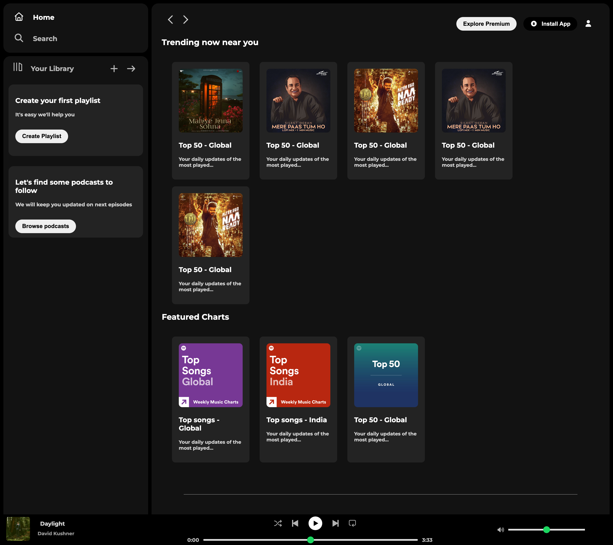

Projects
A selection of projects built with HTML, CSS and JavaScript.
A collection of frontend projects built using HTML, CSS, Tailwind CSS and JavaScript.

01 / 03
Spotify Clone
A frontend recreation of Spotify's web player, focusing on its dark interface, layout and visual styling.
HTML
CSS
Project Details
About this project
Spotify Clone
A recreation of Spotify's web player interface.
Key Focus
Interface layout, dark theme, component arrangement and responsive styling.
01